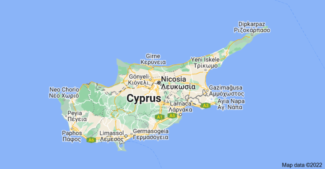

Peyia is the suburb in the Paphos
- important sites in peyia:
- caral bay
- Laourous beach
- Website
- Peyia municipality since 1994
Grine
- Northern Cyprus
- City, ST, 12345
- (555) 555-5555
- Website
- Coming in Spring 2015
Dipkarpaz
- Northern Cyprus
- Iskele District
- Website
Nicosia
- capital city of Cyprus
- Mayor - constantinos yiorkadjis
- postal code - 1010 1107
- Website
Ayia Napa
- Ayia Napa is a Mediterranean resort
town on the southeast coast of Cyprus,
known for its beaches
- Area code - 5330
- Ayia Napa Harbour’s busy tavernas
while adjoining Pantachou Beach offers
a stretch of golden sand
- Website
Laranaca
- Mayor - Andreas vyras
- population - 51,468
- Area code - +357 24
- Website
- Time zone - UTC+2
summer(DST) - 3(EEST)
Paphos
- Mayor- phedonas
- post code - 8000 8999
- Populatin - 35,961
- Website
- Coming in Spring 2015
Limassol
- To the northeast is the Limassol
Archaeological Museum, exhibiting
artifacts from the Neolithic to the Roman periods
- postal code - 3010 3150
- (555) 555-5555
- Website
Famagusta
- MAYOR - Ismail Arter
- Population - 55,649
- TIME ZONE - UTC+2(EET)
- Website